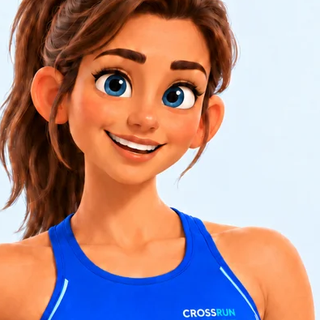
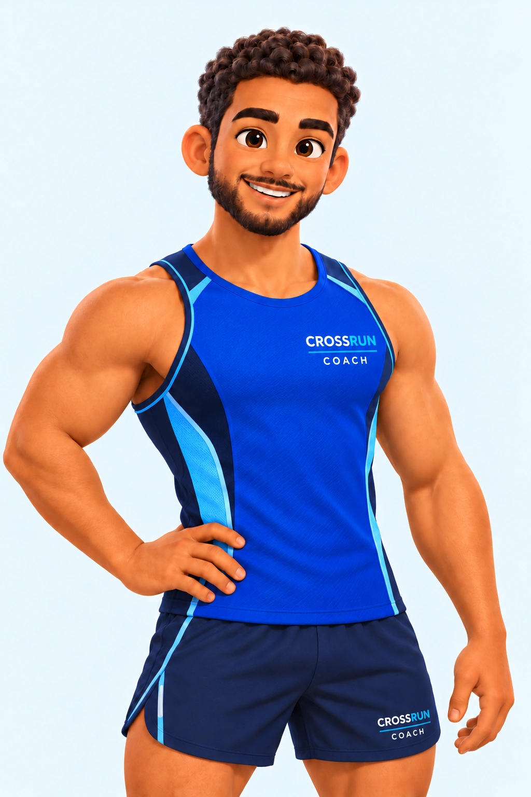
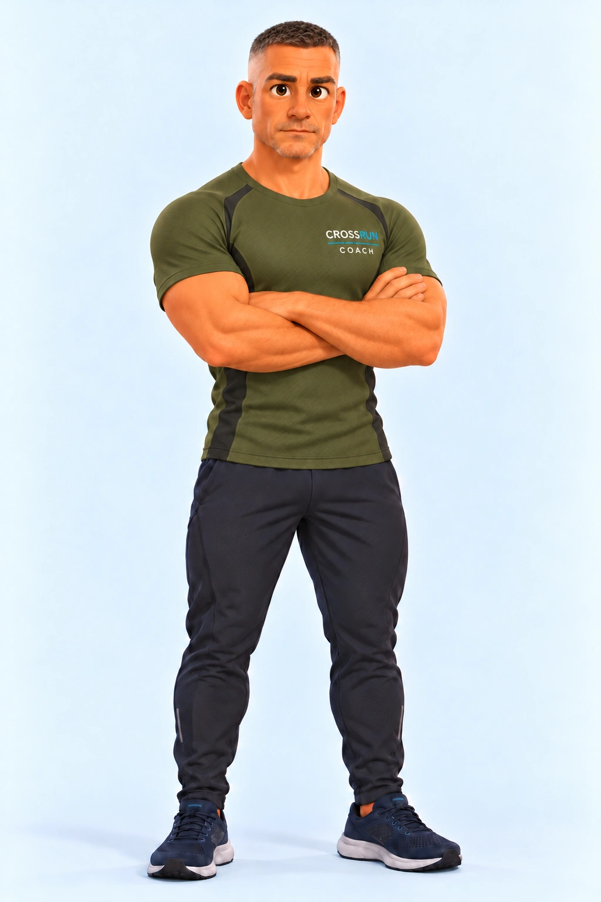

Tu cours.
Tu croises.
Retrouve les runners croisés sur ton chemin.
Et crée ta communauté, près de chez toi.
Bêta iPhone et Android · 18 ans et plus


On se croise.
On se retrouve.
Enregistre ta course ou synchronise ton parcours. CrossRun compare les trajets et leurs horaires pour retrouver les runners croisés.
Tu les retrouves après ta sortie, tu leur fais un signe et tu échanges si vous le souhaitez. Une communauté se crée au fil de tes courses.
Découvrir le fonctionnementTon objectif.
Ton programme.
Choisis le coach qui te ressemble. Il t’accompagne avec un programme adapté à ton niveau, ton objectif et tes disponibilités.

NoahAllure · progressionPour aller plus loin, un cap après l’autre.Découvrir Noah
AlexEndurance · régularitéPour construire une routine qui dure.Découvrir Alex
LinaConfiance · constancePour prendre confiance et garder l’élan.Découvrir Lina

ÉricDiscipline · rigueurPour un cadre clair et un coach qui te pousse.Découvrir Éric
5 km, 10 km, semi ou marathon : retrouve tes séances, ta prochaine sortie et ta progression dans l’application.
Chacun court.
Tout le groupe avance.
À cinq, reliez Cannes à Marseille en cumulant vos kilomètres. Chacun court où il veut : chaque sortie fait avancer le groupe sur la carte, jusqu’à l’objectif commun.
Découvrir les défisCannes Marseille
5 runners · Un objectif commun

Les kilomètres de chacun s’additionnent.
- Paul32 km
- Laura27 km
 Noah23 km
Noah23 km- Emma20 km
- Hugo18 km
Itinéraire réel · Progression illustrée
Ta course mérite d’être gardée.
Courses GPS · Historique · Badges · Partage
On se croise
sur CrossRun ?
Les premiers tests sont ouverts sur iPhone et Android, à Cannes et dans les environs.
Installer la bêta sur iPhone
- Installe TestFlight sur ton iPhone.
- Ouvre le lien « Rejoindre la bêta iPhone », puis installe CrossRun dans TestFlight.